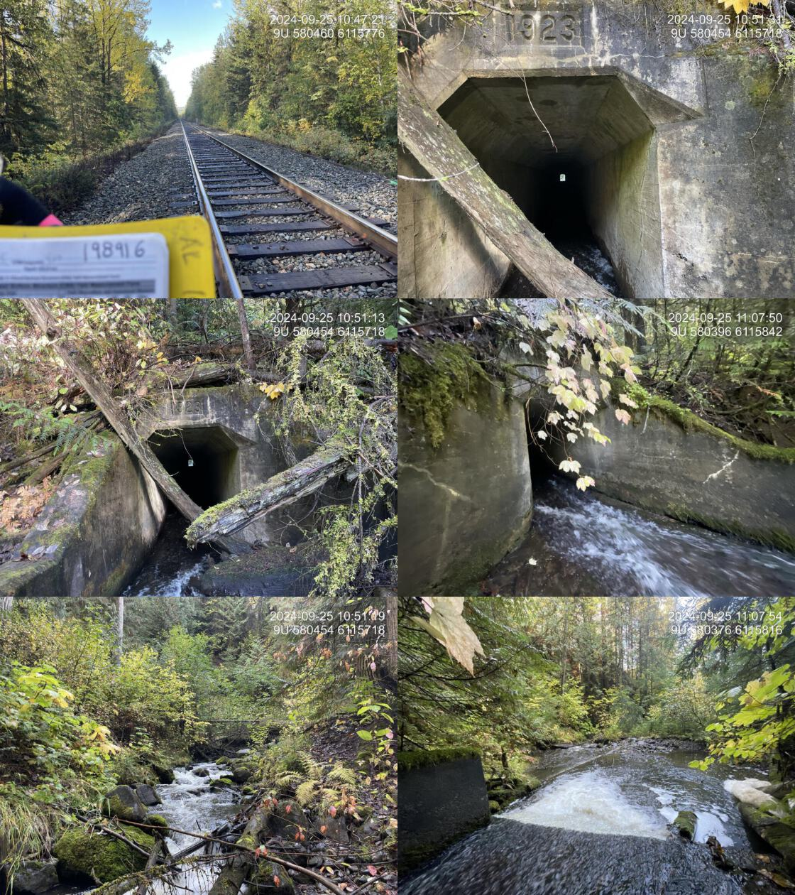
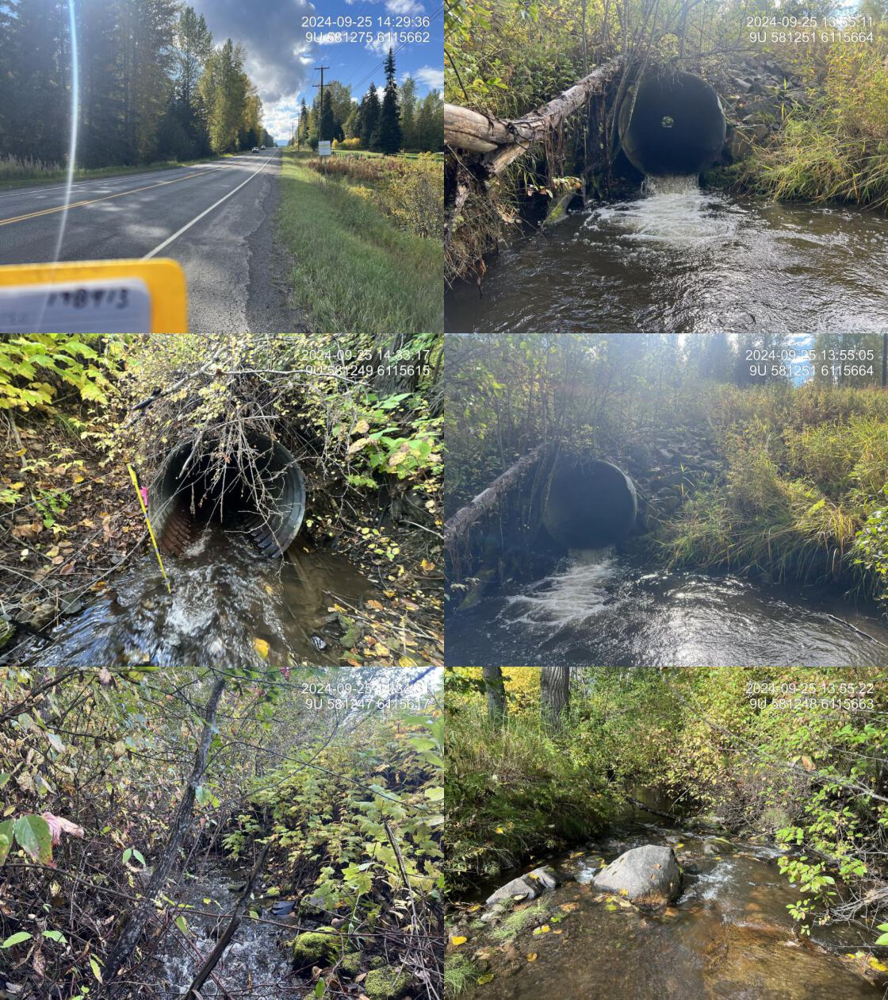

Gershwin Creek - 198916 & 198913 - Appendix
Site Location
PSCIS crossings 198916 and 198913 are located on Gershwin Creek. This stream flows from an unnamed lake, first southwest and then northwest, before entering the Skeena River approximately 12.5km southwest of the town of New Hazelton. PSCIS crossing 198916 is located 1.8km upstream of the confluence of Gershwin Creek and the Skeena River, on the CN Railway. Approximately 900m upstream, crossing 198913 is located on Highway 16, and is the responsibility of the Ministry of Transportation and Infrastructure. Both crossings are within the Kispiox River watershed group.
Background
Gershwin Creek is a fourth order stream with an upstream watershed area of approximately 12.9km2. The watershed ranges in elevation from a maximum of 2019m to 264m near the lower crossing (Table 4.11).
In 2023, crossings 198916 and 198913 were assessed with fish passage assessments (Irvine and Schick 2023). These sites were prioritized for follow-up with habitat confirmation assessments due to the presence of high-value habitat observed upstream and fish documented immediately downstream of the Highway 16 crossing during the 2023 assessment (Irvine and Schick 2023). Previously, have been documented in the lake upstream of the Highway 16 crossing (198913) (Norris [2018] 2024; MoE 2024a).
During the 2024 survey, two additional crossings were assessed. Approximately 1.3km upstream of the Highway 16 crossing (198913) on Gershwin Creek, a crossing was assessed on Comeau Road (PSCIS crossing 203123). At this location, the stream had no visible channel and was determined to be unlikely to provide fish habitat. The road is the responsibility of the Ministry of Transportation and Infrastructure.
Approximately 680 m upstream of the railway crossing, a small tributary flows into Gershwin Creek from the north. In 2023, PSCIS crossing 198907 was assessed where this tributary intersects Braucher Road. At this location, the stream had moderate flow downstream with a well-defined channel, while the upstream channel was heavily overgrown and led to a wetland. In 2024, a second crossing on this tributary was assessed approximately 900 m further upstream on Comeau Road (PSCIS crossing 203124). Downstream of this crossing, the stream was described as a very small drainage. The road is the responsibility of the Ministry of Transportation and Infrastructure.
fpr::fpr_table_wshd_sum(site_id = my_site) |>
fpr::fpr_kable(caption_text = paste0('Summary of derived upstream watershed statistics for PSCIS crossing ', my_site, '.'),
footnote_text = 'Elev P60 = Elevation at which 60% of the watershed area is above',
scroll = F)| Site | Area Km | Elev Site | Elev Min | Elev Max | Elev Median | Elev P60 | Aspect |
|---|---|---|---|---|---|---|---|
| 198916 | 12.9 | 264 | 201 | 2019 | 575 | 411 | W |
| * Elev P60 = Elevation at which 60% of the watershed area is above |
Bcfishpass modelling outputs are presented in Table 4.12). A map of the watershed is provided in map attachment 093M.101.
| Habitat | Potential | Remediation Gain | Remediation Gain (%) |
|---|---|---|---|
| ST Network (km) | 16.5 | 1.2 | 7 |
| ST Lake Reservoir (ha) | 9.5 | 0.0 | 0 |
| ST Wetland (ha) | 6.1 | 0.0 | 0 |
| ST Slopeclass03 Waterbodies (km) | 1.8 | 0.0 | 0 |
| ST Slopeclass03 (km) | 7.0 | 0.0 | 0 |
| ST Slopeclass05 (km) | 4.0 | 0.5 | 12 |
| ST Slopeclass08 (km) | 3.5 | 0.7 | 20 |
| ST Spawning (km) | 0.0 | 0.0 | – |
| ST Rearing (km) | 0.0 | 0.0 | – |
| CH Spawning (km) | 0.0 | 0.0 | – |
| CH Rearing (km) | 0.0 | 0.0 | – |
| CO Spawning (km) | 3.5 | 0.5 | 14 |
| CO Rearing (km) | 4.3 | 0.5 | 12 |
| CO Rearing (ha) | 0.0 | 0.0 | – |
| SK Spawning (km) | 0.0 | 0.0 | – |
| SK Rearing (km) | 0.0 | 0.0 | – |
| SK Rearing (ha) | 0.0 | 0.0 | – |
| * Model data is preliminary and subject to adjustments. |
Stream Characteristics at Crossings 198916 and 198913
At the time of assessment, PSCIS crossing 198916 was un-embedded, non-backwatered and ranked as a barrier to upstream fish passage according to the provincial protocol (MoE 2011) (Table 4.13). Constructed in the 1920s, this crossing is a concrete box culvert approximately 100 m in length, located beneath the CN railway with approximately 30–40 m of fill above it. It features a moderate 0.45 m outlet drop that adult fish could likely overcome but is presumed to act as a barrier to juvenile fish. The culvert’s relatively steep 6% slope, minimal flow depths, and swift currents further impede fish passage. Installing baffles within the culvert would likely improve fish passage conditions.
PSCIS crossing 198913 was un-embedded, non-backwatered and ranked as a barrier to upstream fish passage according to the provincial protocol (MoE 2011) (Table 4.14). Located on Highway 16, this crossing had a 0.35 m outlet drop and a significant 0.85 m deep outlet pool, suggesting the culvert is undersized for the stream.
At both crossings, the water temperature was 7.6\(^\circ\)C, pH was 8.1 and conductivity was 305 uS/cm.
| Location and Stream Data |
|
Crossing Characteristics | – |
|---|---|---|---|
| Date | 2024-09-25 | Crossing Sub Type | Concrete Box |
| PSCIS ID | 198916 | Diameter (m) | 1.5 |
| External ID | – | Length (m) | 100 |
| Crew | LS JD | Embedded | No |
| UTM Zone | 9 | Depth Embedded (m) | – |
| Easting | 580463 | Resemble Channel | – |
| Northing | 6115769 | Backwatered | No |
| Stream | Gershwin Creek | Percent Backwatered | – |
| Road | Railway | Fill Depth (m) | 9.9 |
| Road Tenure | CN Rail | Outlet Drop (m) | 0.45 |
| Channel Width (m) | 4.4 | Outlet Pool Depth (m) | 0.35 |
| Stream Slope (%) | 4.4 | Inlet Drop | No |
| Beaver Activity | No | Slope (%) | 6 |
| Habitat Value | Medium | Valley Fill | Deep Fill |
| Final score | 42 | Barrier Result | Barrier |
| Fix type | Replace with New Open Bottom Structure | Fix Span / Diameter | 35.5 |
| Photos: From top left clockwise: Road/Site Card, Barrel, Outlet, Downstream, Upstream, Inlet. | |||
| Comments: The concrete box culvert is approximately 100 m long beneath a railway crossing, with about 30 to 40 m of fill above it. A swift current flows through the culvert, and installing baffles could improve fish passage. Fish sampling captured cutthroat trout and Dolly Varden. There is a moderate outlet drop, but adult fish could likely move upstream. The habitat upstream features good flow through a steeper section with a healthy, mature mixed riparian forest, stable banks, and gravel pockets suitable for spawning coho, Dolly Varden, and cutthroat trout. Downstream, abundant boulders create step pools alongside frequent large woody debris, though high flows limited suitable fish habitat during the survey. Although construction would be expensive and challenging, this site is a high priority for restoration follow-up.Culvert length 100 m but changed to 99.9 m to meet submission requirements.Fill depth 30 m but changed to 9.9 m to meet submission requirements. |
| Location and Stream Data |
|
Crossing Characteristics | – |
|---|---|---|---|
| Date | 2024-09-25 | Crossing Sub Type | Round Culvert |
| PSCIS ID | 198913 | Diameter (m) | 1.5 |
| External ID | – | Length (m) | 40 |
| Crew | AI JO | Embedded | No |
| UTM Zone | 9 | Depth Embedded (m) | – |
| Easting | 581250 | Resemble Channel | – |
| Northing | 6115660 | Backwatered | No |
| Stream | Gershwin Creek | Percent Backwatered | – |
| Road | Highway 16 | Fill Depth (m) | 2.5 |
| Road Tenure | MOTi | Outlet Drop (m) | 0.35 |
| Channel Width (m) | 5 | Outlet Pool Depth (m) | 0.85 |
| Stream Slope (%) | 3 | Inlet Drop | No |
| Beaver Activity | No | Slope (%) | 3 |
| Habitat Value | Medium | Valley Fill | Deep Fill |
| Final score | 42 | Barrier Result | Barrier |
| Fix type | Replace with New Open Bottom Structure | Fix Span / Diameter | 15 |
| Photos: From top left clockwise: Road/Site Card, Barrel, Outlet, Downstream, Upstream, Inlet. | |||
|
Comments: There is a deep outlet pool, suggesting the culvert is undersized for the stream. High-quality gravels were present at the pool’s outlet, and upstream of the crossing, there was high-value habitat with frequent overwintering pools, spawning gravels, and adequate riparian cover with large cottonwoods throughout. This site was part of a habitat confirmation assessment, with the stream surveyed from the downstream railway crossing up to this location and an additional 600 m upstream. Downstream, crossing 198916 consists of a large, long box culvert beneath the railway with minimal flow depth and a swift current, making it unlikely that fish from the mainstem of the Skeena River can access this site until the railway barrier is addressed. Fish sampling at this site captured cutthroat trout and Dolly Varden. MoTi chris_culvert_id: 8300872 |
Stream Characteristics Downstream of Crossing 198916
The stream was surveyed downstream from crossing 198916 for 300m . The stream contained numerous boulders forming step pools; however, moderate flows at the time of assessment limited the availability of pools suitable for fish. The first pool suitable for overwintering fish, with adequately reduced flow, was located approximately 250 m downstream of the culvert. There were occasional gravels suitable for spawning and frequent large woody debris, which contributed to the formation of additional steps. (Figure 4.11). The average channel width was 5.9m, the average wetted width was 3.7m, and the average gradient was 5.1%.Total cover amount was rated as moderate with boulders dominant. Cover was also present as small woody debris, large woody debris, and overhanging vegetation.The dominant substrate was cobbles with gravels sub-dominant. The habitat was rated as medium value suitable for salmonid rearing and spawning.
Stream Characteristics Upstream of Crossing 198916 and Downstream of Crossing 198913
The stream was surveyed from the railway crossing (198916) upstream to the Highway 16 crossing (198913), a distance of approximately 900 m (Figures 4.12 - 4.13. A large woody debris jam was observed approximately 250 m upstream of the railway crossing, creating a 17% gradient over a 9 m section due to a fallen tree. The stream maintained good flow through this steeper section, supported by a healthy, mature mixed riparian forest that stabilized the banks. The average channel width was 4.4m, the average wetted width was 3.3m, and the average gradient was 4.4%.The dominant substrate was cobbles with boulders sub-dominant.Total cover amount was rated as moderate with undercut banks dominant. Cover was also present as small woody debris, boulders, and overhanging vegetation. The habitat was rated as medium value and contained occasional pockets of gravels suitable for spawning by coho salmon, Dolly Varden, and cutthroat trout.
Stream Characteristics Upstream of Crossing 198913
The stream was surveyed upstream from crossing 198913 for 600m . The stream had frequent pools suitable for overwintering fish, with spawning gravels present despite a significant amount of fines. In the ~200 m section just upstream of the crossing, the stream maintains a low gradient and flows through agricultural fields, however, there were large cottonwoods providing sufficient riparian cover observed throughout the entire 600 m surveyed. Two logjams, each approximately 1 m in height, were observed but remain passable for fish (Figure 4.14).The average channel width was 6.0m, the average wetted width was 4m, and the average gradient was 2.8%.Total cover amount was rated as abundant with large woody debris dominant. Cover was also present as small woody debris, boulders, deep pools, and overhanging vegetation.The dominant substrate was gravels with fines sub-dominant. The habitat was rated as high value for salmonid rearing an spawning.
Fish Sampling
Electrofishing was conducted below and above the railway crossing (198916) with results summarised in Tables 4.16 - 4.18 and Figure 4.9. A total of 35 fish were captured downstream including Dolly Varden and cutthroat trout, and 3 Dolly Varden were captured upstream (Figure 4.15). .
Electrofishing was also conducted upstream and downstream of the crossing on Highway 16 (198913) with results summarised in Tables 4.17 - 4.19 and Figure 4.10. A total of 12 fish were captured downstream including Dolly Varden and cutthroat trout, and 9 Dolly Varden were captured upstream (Figure 4.16). .
Structure Remediation and Cost Estimate
Should restoration/maintenance activities proceed, replacement of the railway crossing (198916) with a bridge or open bottom structure is recommended. At the time of reporting in 2025, the cost of the work is estimated at $ 26,625,000. It is unlikely that fish from the mainstem of the Skeena River can access Gershwin Creek upstream of this railway crossing, and although construction would be expensive and challenging, this crossing is a high priority for restoration follow-up.
Until the downstream railway crossing is upgraded, replacement of the upstream crossing on Highway 16 (198913) is not recommended. If the downstream crossing is upgraded, the Highway 16 crossing should be replaced with a bridge spanning 15 m. At the time of reporting in 2025, the estimated cost for the replacement is $ 11,250,000.
Conclusion
PSCIS crossings 198916 and 198913 are located on Gershwin Creek which provides medium to high-value habitat for salmonids, including coho salmon, Dolly Varden, and cutthroat trout. Conservative estimates indicate approximately 2.3km of coho rearing habitat upstream of the railway crossing and 1.3km upstream of the Highway 16 crossing.
Crossing 198916 on the CN Railway is a historic, exceptionally long concrete box culvert with approximately 30–40 m of fill above it. It has been identified as a barrier to juvenile fish passage due to its 0.45 m outlet drop, steep slope, and swift currents. This culvert likely inhibits fish from the mainstem of the Skeena River from accessing upstream habitats beyond this crossing. The site was rated as a high priority for replacement, however, given the significant cost and scale of such a project, the installation of baffles is recommended as a more practical interim solution to improve fish passage conditions.
Replacement of the upstream Highway 16 crossing (198913) is recommended only if the downstream CN Railway crossing is first upgraded, as fish passage is otherwise restricted at the railway culvert. Collectively, these crossings form a passage for salmonid movement within the watershed. Restoration efforts should prioritize the downstream CN Railway crossing, as its improvement would unlock access to high-value rearing and spawning habitats further upstream.
tab_hab_summary |>
dplyr::filter(Site %in% c(my_site, my_site2)) |>
fpr::fpr_kable(caption_text = paste0("Summary of habitat details for PSCIS crossings ", my_site, " and ", my_site2, "."),
scroll = F) | Site | Location | Length Surveyed (m) | Average Channel Width (m) | Average Wetted Width (m) | Average Pool Depth (m) | Average Gradient (%) | Total Cover | Habitat Value |
|---|---|---|---|---|---|---|---|---|
| 198913 | Upstream | 600 | 6.0 | 4.0 | 0.6 | 2.8 | abundant | high |
| 198916 | Downstream | 300 | 5.9 | 3.7 | 0.3 | 5.1 | moderate | medium |
| 198916 | Upstream | 900 | 4.4 | 3.3 | 0.4 | 4.4 | moderate | medium |
| site | passes | ef_length_m | ef_width_m | area_m2 | enclosure |
|---|---|---|---|---|---|
| 198916_ds_ef1 | 1 | 34 | 3.1 | 105.4 | partial enclosure |
| 198916_ds_ef2 | 1 | 7 | 5.8 | 40.6 | partial enclosure |
| 198916_us_ef1 | 1 | 43 | 3.4 | 146.2 | partial enclosure |
| site | passes | ef_length_m | ef_width_m | area_m2 | enclosure |
|---|---|---|---|---|---|
| 198913_ds_ef1 | 1 | 7 | 6.0 | 42 | partial enclosure |
| 198913_ds_ef2 | 1 | 20 | 3.3 | 66 | open |
| 198913_us_ef1 | 1 | 30 | 3.0 | 90 | partial enclosure |
| local_name | species_code | life_stage | catch | density_100m2 | nfc_pass |
|---|---|---|---|---|---|
| 198916_ds_ef1 | Cutthroat Trout | adult | 1 | 0.9 | FALSE |
| 198916_ds_ef1 | Cutthroat Trout | fry | 4 | 3.8 | FALSE |
| 198916_ds_ef1 | Cutthroat Trout | juvenile | 4 | 3.8 | FALSE |
| 198916_ds_ef1 | Cutthroat Trout | parr | 8 | 7.6 | FALSE |
| 198916_ds_ef1 | Dolly Varden | adult | 1 | 0.9 | FALSE |
| 198916_ds_ef1 | Dolly Varden | juvenile | 1 | 0.9 | FALSE |
| 198916_ds_ef2 | Cutthroat Trout | adult | 1 | 2.5 | FALSE |
| 198916_ds_ef2 | Cutthroat Trout | fry | 3 | 7.4 | FALSE |
| 198916_ds_ef2 | Cutthroat Trout | juvenile | 3 | 7.4 | FALSE |
| 198916_ds_ef2 | Cutthroat Trout | parr | 5 | 12.3 | FALSE |
| 198916_ds_ef2 | Dolly Varden | adult | 2 | 4.9 | FALSE |
| 198916_ds_ef2 | Dolly Varden | fry | 1 | 2.5 | FALSE |
| 198916_ds_ef2 | Dolly Varden | juvenile | 1 | 2.5 | FALSE |
| 198916_us_ef1 | Dolly Varden | parr | 3 | 2.1 | FALSE |
|
* nfc_pass FALSE means fish were captured in final pass indicating more fish of this species/lifestage may have remained in site. Mark-recaptured required to reduce uncertainties. |
| local_name | species_code | life_stage | catch | density_100m2 | nfc_pass |
|---|---|---|---|---|---|
| 198913_ds_ef1 | Cutthroat Trout | adult | 1 | 2.4 | FALSE |
| 198913_ds_ef1 | Dolly Varden | adult | 1 | 2.4 | FALSE |
| 198913_ds_ef1 | Dolly Varden | fry | 1 | 2.4 | FALSE |
| 198913_ds_ef1 | Dolly Varden | juvenile | 3 | 7.1 | FALSE |
| 198913_ds_ef2 | Cutthroat Trout | adult | 1 | 1.5 | FALSE |
| 198913_ds_ef2 | Dolly Varden | fry | 1 | 1.5 | FALSE |
| 198913_ds_ef2 | Dolly Varden | juvenile | 3 | 4.5 | FALSE |
| 198913_ds_ef2 | Dolly Varden | parr | 1 | 1.5 | FALSE |
| 198913_us_ef1 | Dolly Varden | fry | 1 | 1.1 | FALSE |
| 198913_us_ef1 | Dolly Varden | juvenile | 3 | 3.3 | FALSE |
| 198913_us_ef1 | Dolly Varden | parr | 5 | 5.6 | FALSE |
|
* nfc_pass FALSE means fish were captured in final pass indicating more fish of this species/lifestage may have remained in site. Mark-recaptured required to reduce uncertainties. |
my_caption <- paste0('Densites of fish (fish/100m2) captured upstream and downstream of PSCIS crossing ', my_site, '.')
fpr::fpr_plot_fish_box() Figure 4.9: Densites of fish (fish/100m2) captured upstream and downstream of PSCIS crossing 198916.
my_caption <- paste0('Densites of fish (fish/100m2) captured upstream and downstream of PSCIS crossing ', my_site2, '.')
fpr::fpr_plot_fish_box(sit = my_site2) Figure 4.10: Densites of fish (fish/100m2) captured upstream and downstream of PSCIS crossing 198913.
my_photo1 = fpr::fpr_photo_pull_by_str(str_to_pull = 'ds_typical_1_')
my_caption1 = paste0('Typical habitat downstream of PSCIS crossing ', my_site, '.')Figure 4.11: Typical habitat downstream of PSCIS crossing 198916.
my_photo2 = fpr::fpr_photo_pull_by_str(str_to_pull = 'us_typical_1')
my_caption2 = paste0('Typical habitat upstream of PSCIS crossing ', my_site, '.')Figure 4.12: Typical habitat upstream of PSCIS crossing 198916.
my_caption <- paste0('Left: ', my_caption1, ' Right: ', my_caption2)
knitr::include_graphics(my_photo1)
knitr::include_graphics("fig/pixel.png")
knitr::include_graphics(my_photo2)my_photo1 = fpr::fpr_photo_pull_by_str(site = my_site, str_to_pull = 'us_pool')
my_caption1 = paste0('Typical habitat downstream of PSCIS crossing ', my_site2, '.')Figure 4.13: Typical habitat downstream of PSCIS crossing 198913.
my_photo2 = fpr::fpr_photo_pull_by_str(site = my_site2, str_to_pull = 'us_typical_2')
my_caption2 = paste0('Typical habitat upstream of PSCIS crossing ', my_site2, '.')Figure 4.14: Typical habitat downstream of PSCIS crossing 198913.
my_caption <- paste0('Left: ', my_caption1, ' Right: ', my_caption2)
knitr::include_graphics(my_photo1)
knitr::include_graphics("fig/pixel.png")
knitr::include_graphics(my_photo2)my_photo1 = fpr::fpr_photo_pull_by_str(str_to_pull = 'fish_1')
my_caption1 = paste0('Cutthroat trout captured downstream of crossing ', my_site, '.')Figure 4.15: Cutthroat trout captured downstream of crossing 198916.
my_photo2 = fpr::fpr_photo_pull_by_str(site = my_site2, str_to_pull = 'fish_1')
my_caption2 = paste0('Dolly varden with captured downstream of crossing ', my_site2, '.')Figure 4.16: Dolly varden with captured downstream of crossing 198913.
my_caption <- paste0('Left: ', my_caption1, ' Right: ', my_caption2)
knitr::include_graphics(my_photo1)
knitr::include_graphics("fig/pixel.png")
knitr::include_graphics(my_photo2)